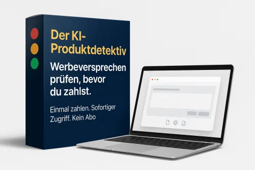

MiLoG-Wächter — 30% Provision für Excel-Zeiterfassung
Produktprofil · Marktplatz-Daten 2026-10-09 · Verkaufsseiten-Recherche 2026-10-09 · Kategorien: Software
- MiLoG-Wächter — 30% Provision für Excel-Zeiterfassung ist ein/e Download in Software, vertrieben über den Digistore24-Marktplatz von Anbieter martinburr1a63, gelistet seit 2026-07-05.
- Listenpreis $36.66; Digistore24 meldet — Checkout-Konversion, — Stornierungsquote und 30 % Affiliate-Provision.
- Verdienst pro Verkauf (Affiliate): $11.00 (Anbieter-seitige Statistik, keine Prognose).
Interesse an MiLoG-Wächter — 30% Provision für Excel-Zeiterfassung? Aktueller Preis, Boni und Garantiebedingungen finden Sie auf der offiziellen Seite des Anbieters:
Offizielle Verkaufsseite ansehen
Affiliate-Link (Werbung) — wir verdienen ggf. eine Provision, ohne Mehrkosten für Sie.
Marktplatz-Daten
| Produkttyp | Download |
|---|---|
| Preis | $36.66 (Single payment) |
| Affiliate-Provision | 30 % |
| Garantie/Rückgabe | Laut Verkaufsseite des Anbieters — vor dem Kauf auf der offiziellen Seite prüfen |
| Anbieter | martinburr1a63 (gelistet seit 2026-07-05) |
| Marktplatz-Statistiken* | Checkout-Konversion — · Stornoquote — · Verdienst/Verkauf $11.00 |
* Anbieter-seitige Statistiken von Digistore24; sie hängen von der Traffic-Qualität ab und sind keine Prognose.
Marktplatz-Beschreibung des Anbieters
Sichern Sie sich 30% wiederkehrende Einnahmen mit dem MiLoG-Wächter – der einfachsten und günstigsten Lösung für die gesetzliche Arbeitszeiterfassung nach § 17 Mindestlohngesetz (MiLoG). Warum konvertiert dieses Produkt so extrem gut? Seit der Verschärfung der Zoll-Kontrollen durch die Finanzkontrolle Schwarzarbeit (FKS) drohen Arbeitgebern mit Minijobbern Bußgelder bis zu 30.000 € bei fehlerhafte…
Von der Verkaufsseite des Anbieters
Seitentitel: MiLoG-Wächter Standard — Rechtssichere Stundenaufzeichnung nach § 17 MiLoG - Digistore24
Abschnitts-Überschriften
- MiLoG-Wächter Standard — Rechtssichere Stundenaufzeichnung nach § 17 MiLoG
- MiLoG-Wächter Premium — Vollständiges System inkl. Zoll-Prüfungs-Checkliste
- MiLoG-Wächter Standard — Rechtssichere Stundenaufzeichnung nach § 17 MiLoG
- MiLoG-Wächter Standard — Rechtssichere Stundenaufzeichnung nach § 17 MiLoG
- MiLoG-Wächter Premium — Vollständiges System inkl. Zoll-Prüfungs-Checkliste
Einstiegstext
In 10 Minuten eingerichtet: MiLoG-konforme Stundenaufzeichnung für Klein-Arbeitgeber in Gastronomie, Bau und Reinigung.
Als Arbeitgeber mit Minijobbern oder Beschäftigten in der Gastronomie, im Bau, der Gebäudereinigung oder Logistik bist du gesetzlich verpflichtet, die Arbeitszeiten deiner Mitarbeiter lückenlos zu dokumentieren (§ 17 Mindestlohngesetz).
Das weiß das Hauptzollamt — und prüft unangemeldet. Bei Verstößen drohen bis zu 30.000 € Bußgeld pro Verstoß (§ 21 MiLoG).
✅ NOTION-TEMPLATE (für das Smartphone) ► 8 fertige Seiten, sofort importierbar in Notion (kostenlos) ► Mobile Schichterfassung direkt an der Kasse, auf der Baustelle, im Fahrzeug ► 7-Tage-Frist-Tracker: Gefilterte Ansicht zeigt nur dringende Einträge ► Mindestlohn-Alarm: Verstöße sofort sichtbar ► Funktioniert offline — synchronisiert wenn Internet verfügbar
Preisangaben auf der Seite: $10
Recherche-Methode: rohes HTML · 1319 Wörter · Qualität: rich · recherchiert am 2026-10-09. Vollständige Recherche-Datei (MD) ↗
Wie Produkte dieser Art geliefert werden
Allgemeiner Hinweis zu diesem Produkttyp (keine anbieterspezifische Anleitung): Download-Produkte werden digital geliefert: sofort nach dem Checkout erhalten Sie Downloadlinks (oder Zugang zu einem Mitgliederbereich) — kein physischer Versand. Für die genaue Anwendung von MiLoG-Wächter — 30% Provision für Excel-Zeiterfassung sind die offizielle Verkaufsseite und die enthaltenen Materialien maßgeblich.
Gut zu wissen
- Keine Garantie-Formulierung in unserer Recherche gefunden — bestätigen Sie das Rückgabefenster auf der offiziellen Seite, bevor Sie kaufen.
- Marktplatz-Zahlen (Preis, Provision, Konversion, Stornoquote) — Quelle: offizielle Digistore24-Marktplatz-API (Affiliate-Sicht), Stand 2026-10-09. Gegenprüfung: Marktplatz-Suche nach Produkt-ID 706672.
- Verkaufsseiten-Zitate — Quelle: https://www.checkout-ds24.com/product/706672, abgerufen 2026-10-09 (Methode: rohes HTML). Verify: offizielle Seite öffnen.
- Garantie / Rückgabe — vom Anbieter festgelegt; vor dem Kauf auf der Verkaufsseite bestätigen.
- Nicht von uns geprüft: Produktqualität, Ergebnisse, Testimonials — kein Praxistest für dieses Listing durchgeführt.
Häufige Fragen zu MiLoG-Wächter — 30% Provision für Excel-Zeiterfassung
Antworten aus dem Marktplatz-Snapshot (2026-10-09) und der Verkaufsseiten-Recherche (2026-10-09); Anbieteraussagen sind inline gekennzeichnet.
Was ist MiLoG-Wächter — 30% Provision für Excel-Zeiterfassung?
MiLoG-Wächter — 30% Provision für Excel-Zeiterfassung ist ein Angebot des Typs „Download" im Digistore24-Marktplatz, Anbieter: martinburr1a63, gelistet seit 2026-07-05. Eingepflegt unter Software. Digistore24 wickelt Checkout, Lieferung und Rückgaben ab.
Wie viel kostet MiLoG-Wächter — 30% Provision für Excel-Zeiterfassung?
Der Digistore24-Marktplatz listet es für $36.66 (single payment). Preise legt der Anbieter fest und können sich ändern — der Marktplatz-Eintrag oben zeigt den Schnappschuss; die offizielle Verkaufsseite zeigt den aktuellen Preis.
Gibt es eine Geld-zurück-Garantie für MiLoG-Wächter — 30% Provision für Excel-Zeiterfassung?
Unsere Verkaufsseiten-Recherche hat keine explizite Garantie-Formulierung gefunden. Viele Digistore24-Produkte bieten 60 Tage Geld-zurück, aber das legt jeder Anbieter selbst fest — bestätigen Sie es auf der offiziellen Verkaufsseite, bevor Sie kaufen.
Ist MiLoG-Wächter — 30% Provision für Excel-Zeiterfassung seriös?
Wir bewerten keine Seriosität — wir veröffentlichen überprüfbare Zahlen: Anbieter martinburr1a63 (gelistet seit 2026-07-05), Checkout-Konversion —, Stornoquote —, Affiliate-Verdienst/Verkauf $11.00 (alles Anbieter-seitige Marktplatz-Statistiken). Lesen Sie unsere 6-Punkte-Bewertungsmethode und entscheiden Sie anhand der Zahlen — oder diskutieren Sie MiLoG-Wächter — 30% Provision für Excel-Zeiterfassung auf GitHub.
Wo kann ich MiLoG-Wächter — 30% Provision für Excel-Zeiterfassung sicher kaufen?
Nur über die offizielle Verkaufsseite, die auf dieser Seite verlinkt ist (Checkout und Rückgaben laufen über Digistore24). Prüfen Sie dort Preis und Garantie vor der Bestellung. Der Link ist ein Affiliate-Link — der Kauf unterstützt diese Website ohne Mehrkosten für Sie.
Wie erhalte ich MiLoG-Wächter — 30% Provision für Excel-Zeiterfassung nach der Zahlung?
Der Checkout läuft über Digistore24: Nach der Zahlung erhalten Sie Ihren Zugang oder Download per E-Mail und in Ihrem Digistore24-Kundenkonto. Lieferdetails für diesen Produkttyp: Download-Produkte werden digital geliefert: sofort nach dem Checkout erhalten Sie Downloadlinks (oder Zugang zu einem Mitgliederbereich) — kein physischer Versand. Bei Problemen kann der Digistore24-Käufersupport Ihre Bestellung wiederherstellen.
Ähnliche Angebote in Software

Maya: digitale Assistentin für WhatsApp und Telefon Maya beantwortet Kundenanfragen kleiner Betriebe rund um die Uhr auf WhatsApp und im Paket mit Telefon auch

Zencaptcha schützt Webseiten vor Spam und betrügerischen Aktivitäten. Falsche und temporäre E-Mail-Adressen werden erkannt und Bots werden herausgefordert, noch

+++ Willkommen beim Meisterbot-Partnerprogramm! +++ Verdienen Sie über 850 EUR Provision pro Sale mit der ersten schlüsselfertigen KI-Telefonzentrale für den Mi

Verdienen Sie 40 % Provision!Werden Sie Affiliate und profitieren Sie von unserem attraktiven 40% Partnerprovisionssatz – eine der höchsten Provisionen auf Digi
Ähnliche Preislage in Software

Datenprognosen kaufen war noch nie so einfach. Auf Abruf und ohne Abo! Kleinunternehmer, Mittelständler und Berater haben oft kein eigenes Datenanalyse-Team. Pr

Verkaufsseiten-Ersteller Pro Erstellen Sie Landingpages, die tatsächlich verkaufen Vergessen Sie komplizierte, langsame Page-Builder und hohe wiederkehrende mon

„Stundung statt Insolvenz" ist ein 146-seitiges E-Book mit 15 praxiserprobten Anschreiben (bearbeitbare DOCX) und 4 Bonus-Werkzeugen. Es zeigt Selbständige

Schluss mit übertriebenen Marketing Versprechen. Der KI-Produktdetektiv analysiert Werbeversprechen über KI-Tools und zeigt dir BEVOR du zahlst, ob die Versprec
Ähnliche Suchanfragen
Wo Sie es sich ansehen können
Wo Sie es sich ansehen können
Aktuelle Preise, Garantie und Boni finden Sie auf der offiziellen Verkaufsseite:
Offizielle Verkaufsseite ansehen
Das ist ein Affiliate-Link (Werbung) — kaufen Sie darüber, verdienen wir ggf. eine Provision, ohne Mehrkosten für Sie.
Quellen & weiterführende Informationen
- Offizielle Verkaufsseite (aktueller Preis, Garantie, Boni): www.checkout-ds24.com/product/706672 (Affiliate-Link)
- Öffentliche Digistore24-Produktseite: digistore24.com/product/706672
- Vollständige Recherche-Datei (Markdown, versioniert): content/products/57406-milog-w-chter-30-provision-f-r-excel-zeiterfassung.md
- Marktplatz-Kategorie: Software
Wie wir Produkte wie MiLoG-Wächter — 30% Provision für Excel-Zeiterfassung bewerten
Sechs Prüfungen, ausschließlich mit offiziellen Marktplatz-Zahlen. Die vollständige Bewertungsmethode lesen · unsere Recherche-Standards & Kennzeichnung.
Fragen oder eigene Erfahrungen mit MiLoG-Wächter — 30% Provision für Excel-Zeiterfassung?
Praxis-Tests veröffentlichen wir erst, nachdem wir ein Produkt selbst gekauft haben — aber Ihre Erfahrung hilft anderen Lesern: Diskussion zu MiLoG-Wächter — 30% Provision für Excel-Zeiterfassung auf GitHub starten/verfolgen. Falsche Zahl gefunden? Korrektur melden — jede Seite zeigt ihre Datenstände, Korrekturen gelten für die ganze Website.